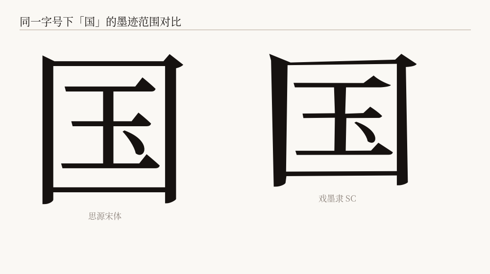
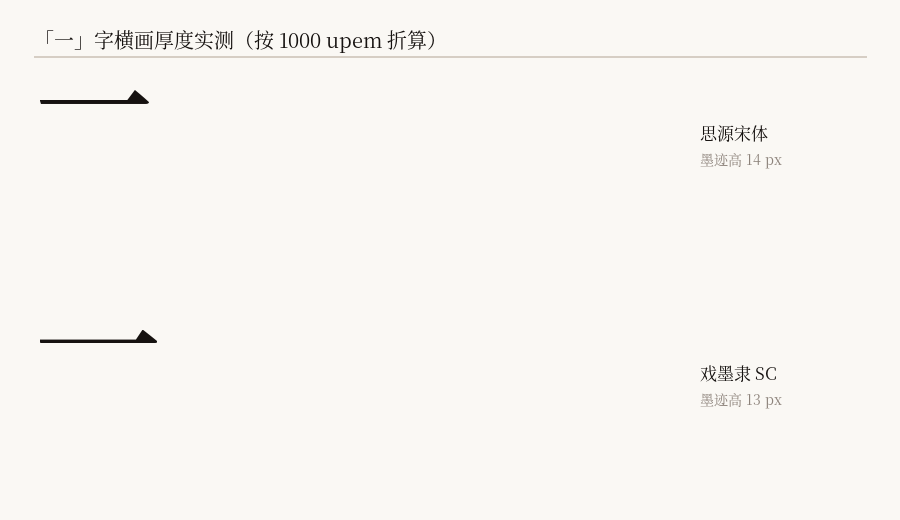

它是什么
WHAT IT IS思源宋体的轮廓早已合并——一个「十」字只有一条闭合轮廓，横竖笔画焊成一体， 因此无法按单条笔画加粗减细。戏墨隶的全部改造，通过全局坐标变形完成。
汉字设计的核心杠杆是中宫。思源宋体同样带日文字体基因，中宫偏松。 戏墨隶把它收紧、把字面放大——中宫更紧、字面更饱满是它唯一的识别特征。
与黑体姊妹款的区别在于少一个旋钮：戏墨黑加笔画对比（横细竖粗）， 戏墨隶不加。原因见卷四——宋体的横画只有 33 单位厚，没有余量可削。

局部缩放率建模，笔画只渐变变细，绝不增粗。
「国」字实测：字面放大，比源字体更饱满。
与 sy=1.045 配合，保持宋体方正偏扁的本性。
六个字重逐字形绘制并重编译，零失败。
一款字重，与宋体对照
ONE WEIGHT · VS SONG下面每一行都是真正的字体文件在渲染，不是图片。上排是思源宋体，下排是戏墨隶 —— 同一句话、同一个字号，可以直接比对。
山川异域，风月同天
山川异域，风月同天
永和九年，岁在癸丑
永和九年，岁在癸丑
它离隶书有多远
HOW CLOSE TO LISHU先说清楚：这是一款隶书笔意的宋体变体，不是汉隶字库的复刻。
做得到的：扁方字形、横粗竖细、横画走向起伏、笔画端部的外扩变化。
做不到的：隶书的结构性特征 —— 部件分背（笔画常不相连）、 结构重排，以及书法意义上的蚕头燕尾笔锋。
原因在生成方式：本字体是在思源宋体的骨架上就地推拉。 骨架来自宋体，所以字的结构仍是宋体，改变的只是厚度分布与走向。 要让结构变成隶书，只能从公有领域的碑刻手工描摹，那是另一个量级的工作。

为什么不做笔画分解重画
最初的方案是把字形拆成一根根独立笔画再分别重画。这条路走不通 —— 骨架分解对粗细不均的笔画会产生平行重分支：实测「同」的「冂」 被拆成 3 条互相重叠的路径，重画后各自外扩，叠成实心块或裂成碎片。
实测后果：92 个随机常用字里，字怀个数的中位数变成源字的 2.00 倍， 笔画被切碎。可读，但一眼就能看出是坏的。
现在的做法
拓扑完全不动。原字形的算子序列原样保留，只把每个点沿法线推开：
P' = P + n̂ · sign · (w_new − w_old)
位移等于局部厚度的变化量，有界，且不改变点原有的偏心量 —— 衬线与末端形态因此得以保留。轮廓数、绕向、曲线结构全部不变， 结构上不可能碎裂。
两处保护：交点附近衰减（多笔交汇处「局部厚度」含混， 在那里改厚度必然扭曲）；端点过滤（「海」有 31 个骨架端点， 真实笔画末梢约 10 个，其余是衬线造成的假端点）。
竖排
VERTICAL SETTING竹杖芒鞋轻胜马
定风波 · 苏轼
莫听穿林打叶声，何妨吟啸且徐行。竹杖芒鞋轻胜马，谁怕？一蓑烟雨任平生。
试写
TYPE TESTER戏墨隶 免费商用 四字重
正在按需载入 GB2312 完整字库（约 2.5 MB）——载入前显示的是页面子集。
规格与授权
SPECS & LICENSE| 字形总数 | 31,058 / 字重 |
|---|---|
| cmap 字符 | 30,930 |
| 汉字 | 基本区 20,992 + 扩展 A 区 6,592 |
| 拉丁 / 注音 / 假名 / 谚文 | 全套 |
| 桌面格式 | OTF（CFF），约 11.8 MB |
| 网页格式 | WOFF2；站点子集 790 字符 / 268 KB，GB2312 子集 7,771 字符 / 2.5 MB |
| 竖排 | vhea / vmtx 完整保留 |
| 授权 | SIL Open Font License 1.1 |
你可以 / 不可以
- 免费用于任何场景，包括商业用途
- 自由分发、嵌入、修改
- 修改后分发（衍生字体须同样以 OFL 发布并改名）
- 单独售卖字体文件本身
- 在衍生字体中使用保留字体名
- 以 Adobe 名义做宣传背书
保留字体名：Xi Mo Li · Xi Mo Li SC ·
戏墨隶 · 戏墨隶 SC。